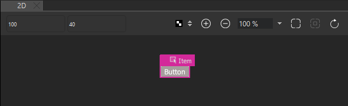

Creating Buttons
To create a button component:
- Select File > New File > Qt Quick Files > Qt Quick UI File > Choose to create a UI file called Button.ui.qml (for example).
Note: Components are listed in Components > My Components only if the filename begins with a capital letter.
- Click Design to edit the file in the 2D view.
- In Navigator, select Item and set the width (W) and height (H) of the button in Properties.
- Drag-and-drop a Rectangle from Components > Default Components > Basic to the component in Navigator. This creates a nested component where the Item is the parent of the Rectangle. Components are positioned relative to their parents.
- In the Properties view, modify the appearance of the rectangle:
- In the Color field, select the button color.
- In the Radius field, set the radius of the rectangle to produce rounded corners for the button.
- Select Layout, and then select the
 (Fill to Parent) button to anchor the Rectangle to the Item.
(Fill to Parent) button to anchor the Rectangle to the Item.
- Drag-and-drop a Text component to the Item in Navigator.
- In the Properties view, edit the properties of the Text component
- In the Text field, enter Button.
You can select the text color in the Text color field and the font, size, and style in the Font section.
- In the Alignment field, select the center buttons to align the text to the center of the button.
- Select Layout > Fill to Parent to anchor the text to the whole button area.
- In the Text field, enter Button.
- Press Ctrl+S to save the button.

To be useful, the button component has to be created in a project. When you work on other files in the project to create screens or other components for the UI, the button component appears in Components > My Components. You can use it to create button instances and modify their properties to assign them useful IDs, change their appearance, and set the button text for each button instance, for example.
To create a graphical button that scales beautifully without using vector graphics, use the Border Image component. For more information, see Creating Scalable Buttons and Borders.